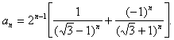

ЗАДАЧИ НА ДЛИННУЮ АРИФМЕТИКУ
Оглавление
- Введение
- Основная часть
- Заключение
- Задачи для самостоятельного решения
- Список литературы
- Сайты аналогичной тематики
Примечание: при нажатии на солнышко или луну перейдешь наверх
Введение
Рассмотрим достаточно популярную в программировании задачу на работу с "длинными" числами. Реально с "астрономическими" или "микроскопическими" числами приходится сталкиваться не так уж и часто. Тем не менее, упражнения, рассматриваемые в этой публикации, могут послужить хорошей тренировкой в области программирования и занять достойное место в классах с углубленным изучением информатики или на кружках по программированию. Алгоритмы, представленные ниже, записаны на Turbo Pascal, версия 7.0. При желании или необходимости они могут легко быть адаптированы к любой другой программной среде.
Диапазон представления целых чисел (Integer, Word, LongInt) ограничен, о чем не раз уже говорилось (впрочем, для действительных величин это замечание тоже актуально). Поэтому при решении задач всегда приходится действовать с оглядкой, — как бы не допустить возникновения ошибки выхода за диапазон или переполнения. Например, вычисляя факториал (n! = 1 * 2 * 3 * … * n), в диапазоне представления величин типа Integer удастся правильно получить только 7! = 5040, а в диапазоне представления типа LongInt — 12! = 479001600. Для больших значений, конечно, можно использовать действительные типы данных, но это уже не гарантирует точного результата. Поэтому полезно для получения точных значений при действиях с многозначными числами разработать другие способы представления таких чисел, алгоритмы выполнения арифметических и других операций, процедуры ввода и вывода результатов и т.д.
Покажем реализацию решения такого рода задач на примере умножения одного многозначного числа на другое. Именно эта арифметическая операция наиболее часто используется при решении других задач.
Основная часть
Наиболее естественным способом представления многозначного числа является запись каждого его разряда в виде отдельного элемента линейного массива (или списка, где память под цифру будет отводиться по мере надобности, в то время как в массиве приходится заранее задавать максимальное количество элементов в нем). Пусть (для удобства дальнейших действий) разряды "длинного" числа при записи в массив нумеруются с единицы, начиная с разряда единиц, т.е. цифра из разряда единиц — элемент массива с номером один, цифра из разряда десятков — элемент массива с номером два и т.д. Определим для работы с "длинными" неотрицательными числами тип данных:
Const MNax = 2000;
Type Digit = 0..9;
DlChislo = Array[1..Nmax] Of Digit;
Для решения поставленной задачи необходимо уметь выполнять следующие действия:
- ввод "длинного" числа;
- собственно умножение двух "длинных" чисел;
- вывод "длинного" числа;
- определение количества цифр в записи числа.
Каждую из подзадач реализуем в виде отдельной подпрограммы. Начнем с ввода. Ввести большое число целесообразно в виде строки, а в дальнейшем преобразовать в массив цифр. В процедуре учтен указанный выше способ размещения "длинного" числа в массиве, т.е. с точки зрения пользователя число записывается как бы в обратном порядке.
{Процедура преобразования длинного числа, записанного
в виде строки, в массив цифр; переменная OK принимает значение True,
если в записи числа нет посторонних символов, отличных от десятичных
цифр, иначе — false}
Procedure Translate(S : String; Var A : DlChislo; Var OK : Boolean);
Var I : Word;
Begin
Zero(A); I := Length(S); OK := True;
While (I >= 1) And OK Do
Begin
If S[I] In ['0'..'9']
Then A[Length(S)- I + 1]:= Ord(S[I]) - 48
Else OK := False; I := I - 1
End
End;
В процедуре вызывается подпрограмма Zero(A), назначение которой — запись нуля в каждый разряд длинного числа. Вот текст этой процедуры:
{Процедура обнуления длинного числа}
Procedure Zero(Var A : DlChislo);
Var I : Integer;
Begin
For I := 1 To NMax Do A[I] := 0;
End;
Таким образом, длинное число записано в массив, где впереди (в качестве элементов с большими номерами) стоят незначащие нули. При выполнении действий и выводе ответа они не учитываются.
Сейчас разработаем функцию определения количества значащих цифр в записи числа, поскольку она потребуется при реализации подпрограммы умножения.
{Функция определения количества цифр в записи длинного числа}
Function Dlina(C : DlChislo) : Integer;
Var I : Integer;
Begin
I := NMax;
While (I > 1) And (C[I] = 0) Do I := I - 1;
Dlina := I
End;
При ее разработке было использовано следующее соображение: если число не равно нулю, то количество цифр в его записи равно номеру первой цифры, отличной от нуля, если просмотр числа осуществляется от старшего разряда к младшему. Если же длинное число равно нулю, то получается, что количество цифр в его записи равно одной, что и требовалось.
Ну и, наконец, главная процедура, ради которой и была проделана вся предшествующая работа. При составлении алгоритма используется идея умножения "столбиком", хотя в нашем варианте сложение выполняется не по окончанию умножения, а по ходу его, т.е. перемножив очередные цифры, сразу же добавляем результирующую цифру в нужный разряд и формируем перенос в следующий разряд.
{Процедура умножения длинных чисел.
A, B — множители, C — произведение}
Procedure Multiplication(A, B : DlChislo; Var C : DlChislo);
Var I, J : Integer; P : Digit; VspRez : 0..99;
Begin
Zero(C);
For I := 1 To Dlina(A) Do {Цикл по количеству цифр
в первом числе}
Begin
P := 0; {Первоначально перенос равен нулю}
For J := 1 To Dlina(B) Do {Цикл по количеству цифр
во втором числе}
Begin
VspRez := A[I] * B[J] + P + C[I + J - 1];
C[I + J - 1] := VspRez Mod 10; {Очередное значение цифры в
разряде I + J - 1}
P := VspRez Div 10 {Перенос в следующий разряд}
End;
C[I + J] := P {последний перенос может быть отличен от нуля,
запишем его в пока ещё свободный разряд}
End
End;
Сейчас приведем листинг программы целиком.
Program DlUmn;
Const NMax = 2000;
Type Digit = 0..9; DlChislo = Array[1..Nmax] Of Digit;
Var S : String;
M, N, R, F : DlChislo;
I, MaxF : Word;
Logic : Boolean;
{Процедура обнуления длинного числа}
Procedure Zero(Var A : DlChislo);
Var I : Integer;
Begin
For I := 1 To NMax Do A[I] := 0;
End;
{Функция определения количества цифр в записи длинного числа}
Function Dlina(C : DlChislo) : Integer;
Var I : Integer;
Begin
I := NMax;
While (I > 1) And (C[I] = 0) Do I := I - 1;
Dlina := I
End;
{Процедура печати длинного числа}
Procedure Print(A : DlChislo);
Var I : Integer;
Begin
For I := Dlina(A) DownTo 1 Do Write(A[I] : 1);
WriteLn
End;
{Процедура преобразования длинного числа в массив цифр}
Procedure Translate(S : String; Var A : DlChislo;
Var OK : Boolean);
Var I : Word;
Begin
Zero(A); I := Length(S); OK := True;
While (I >= 1) And OK Do
Begin
If S[I] In ['0'..'9']
Then A[Length(S) - I+ 1] := Ord(S[I]) - 48
Else OK := False;
I := I - 1
End
End;
Procedure Multiplication(A, B : DlChislo; Var C : DlChislo);
Var I, J : Integer; P : Digit; VspRez : 0..99;
Begin
Zero(C);
For I := 1 To Dlina(A) Do
Begin P := 0;
For J := 1 To Dlina(B) Do
Begin
VspRez := A[I] * B[J] + P + C[I + J - 1];
C[I + J - 1] := VspRez Mod 10;
P := VspRez Div 10
End;
C[I + J] := P
End
End;
{Основная программа}
Begin
Repeat {повторяем ввод, пока число не будет введено правильно}
Write('Введите первый множитель: ');
ReadLn(S); Translate(S, M, Logic)
Until Logic;
Repeat
Write('Введите второй множитель: ');
ReadLn(S); Translate(S, N, Logic)
Until Logic;
Multiplication(M, N, R); Print(R)
End.
В приведенном листинге Print — процедура вывода длинного числа. Предоставим читателю самостоятельно разобраться в алгоритме ее работы.
Вернемся к вычислению факториала. Используя разработанные подпрограммы, определим, значение факториала какого максимального числа можно разместить в памяти при таком представлении длинных чисел.
Вот измененный фрагмент основной программы, решающий поставленную задачу.
Begin
MaxF := 810;
Zero(F);
F[1] := 1;
For I := 1 To MaxF Do
Begin
Str(I, S); {преобразование числа I к строковому типу S}
Translate(S, M, Logic);
Multiplication(F, M, F);
Print(F);
WriteLn('Факториал числа ', I : 4, ' содержит ', Dlina(F), ' цифр.')
End
End.
Заключение
Расчеты показали, что можно вычислять факториалы до значения 810! включительно, в записи которого 1999 цифр. Далее вновь возникает переполнение. Расчеты по программе продолжаются около 5 минут (IBM PC с процессором Pentium–100).
Ниже будет предложен список задач для самостоятельного выполнения. Из них, по мнению автора, наибольшую сложность представляют реализации алгоритмов деления одного длинного числа на другое и извлечение квадратного корня. Алгоритм извлечения квадратного корня подробно описан в справочнике В.А. Гусева и А.Г. Мордковича [7]. В некоторых случаях составленные программы могут выступать как подпрограммы при разработке алгоритмов решения других, более сложных (как в примере с факториалом), задач. Кроме авторских задач и задач из списка литературы здесь приведены задания из олимпиад школьников по программированию, проводившихся в Пермской области в 1989-99 гг.
Посмотри и отдохни!
Задачи для самостоятельного решения
- Составить программу сравнения двух многозначных чисел (количество знаков в записи чисел более 20).
- Составить программу, суммирующую два натуральных многозначных числа с количеством знаков более 20.
- Составить программу вычисления степени an, если a > MaxInt, n > 10.
- Составить программу вычисления числа 264 – 1, в результате сохранить все цифры.
- Составить программу вычисления 100!.
- Составить программу извлечения точного квадратного корня из n-разрядного числа (n > 40).
- Составить программу вычисления точного значения n!, где n > 12.
- Составить программу вычисления точного значения nn, где n > 10.
- Составить программу деления числа a на число b, если a, b — многозначные числа.
- Вычислить 100! + 2100.
- Вычислить 100! – 2100.
- Вычислить 7123.
- Встречаются ли среди цифр числа 211213 – 1 две подряд идущие девятки?
- Вычислить 2–200.
- Составить программу нахождения частного и остатка от деления m-значного числа на n–значное (m, n > 20).
- Выяснить, какое из чисел am, bn больше и на сколько (a, b <= 40000; m, n <= 10).
- Найти n знаков в десятичной записи квадратного корня из целого числа m (n >= 50).
- Найти количество делителей n-значного натурального числа (n > 20).
- Вычислить точное значение (n!)! (n >= 3).
- Составить программу вычисления точного значения суммы 1! + 2! + 3! + ... + n! при n > 10.
-
Составить программу вычисления точного значения суммы дробей

при n > 10. Ответ должен быть представлен в виде несократимой дроби p / Q, где p, Q — натуральные числа. - Вычислить точное значение (nn)! при n >= 3.
-
Составить программу вычисления точного значения суммы первых n членов последовательности 1,
k, k2, k3, ..., kn (n > MaxInt).
Указание: используйте формулу суммы n членов геометрической прогрессии. - Составить программу вычисления точного значения суммы первых n членов последовательности чисел, кратных данному натуральному числу k (n > MaxInt). Указание: используйте формулу суммы n членов арифметической прогрессии.
- Вычислить точное значение суммы 12 + 22 + 32 + … + n2 (n >= 20000).
- Вычислить точное значение суммы 1n + 2n + 3n + ... + nn (n >= 10).
- Найти первое простое число, которое больше 1011.
- Составить программу вычисления точного значения многочлена anxn + an - 1xn - 1 + ... + a1x + a0, где ai и x — целые числа больше 1011.
- Найти наибольший общий делитель и наименьшее общее кратное чисел m и n (m, n >= 1011).
- Проверить, являются ли числа m и n (m, n >= 1011) взаимно простыми.
- Докажите, что число 219936 * (219937 – 1) является совершенным, т.е. равно сумме всех своих делителей, кроме самого себя.
-
"Вращающееся число". Написать программу, которая находит число, обладающее следующими свойствами:
1) число оканчивается на 5;
2) при умножении его на 5 образуется новое число, которое может быть получено из исходного вычеркиванием цифры 5 на конце и переписыванием ее в начало числа. - Дана последовательность, заданная рекуррентной формулой
an + 1 = 7an mod 2023, a1 = 1,
где x mod y означает остаток от деления x на y. Написать программу, вычисляющую an при 1 <= n <= 1000000000000000000000. - Дана последовательность

Написать программу, находящую точное значение an при 1 <= n <= 150.
Пример. При n = 58 получаем an = 10359022039470231387111424. - Напишите программу перевода многозначного числа (с количеством знаков больше 20) в системы счисления с основанием два, восемь, шестнадцать.
- Разложить на простые множители натуральное число с количеством знаков более 11.
-
Умножение периодической дроби.
Задана некоторая положительная правильная периодическая дробь Q и натуральное число N. Числа Q и N таковы, что количество цифр, используемых для их описания, не превосходит 100. При изображении дроби Q периодическая часть заключается в круглые скобки.
Требуется написать программу, которая определяет результат умножения Q на N, то есть непериодическую часть и минимальный период числа Q * N.
В случае получения результата умножения в виде конечной дроби скобки опускаются.
Пример работы правильной программы
Введите периодическую дробь: 0.1(6)
Введите натуральное число: 2
Ответ: 0.(3)
Список использованной литературы
- Абрамов С.А., Гнездилова Г.Г., Капустина Е.Н., Селюн М.И. Задачи по программированию. М.: Наука, 1988.
- Олимпиады по информатике. Задачи и решения. Методические рекомендации для учителей и учащихся школ. Красноярск, 1991.
- Пильщиков В.Н. Сборник упражнений по языку Паскаль. М.: Наука, 1989.
- Касаткин В.Н. Информация. Алгоритмы. ЭВМ. М.: Просвещение, 1991.
- Хонсбергер Р. Математические изюминки. М.: Наука, 1992.
- Семакин И.Г., Шестаков А.П. Лекции по программированию. Пермь: изд-во ПГУ, 1998.
- Гусев В.А., Мордкович А.Г. Математика. Справочные материалы. М.: Просвещение, 1990.
- Гладков В.П. Курс лабораторных работ по программированию. Пермь: изд-во ПГТУ, 1998.
Сайты аналогичной тематики
- Паскаль. Длинная арифметика (форум)
- "Все о Паскале". Длинная арифметика (форум)
- Киберфорум. Паскаль ABC. Длинная арифметика (форум)
| Слово | Частота |
|---|---|
| программа | 24 |
| цифра | 23 |
| при | 19 |
© Шестаков А.П., 1996-1999